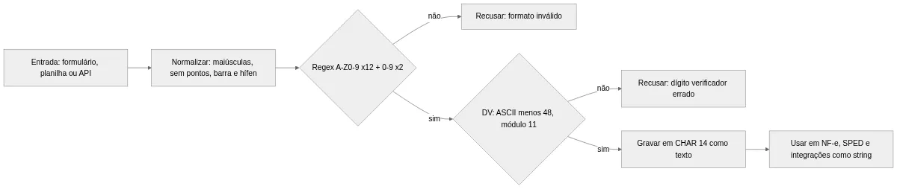
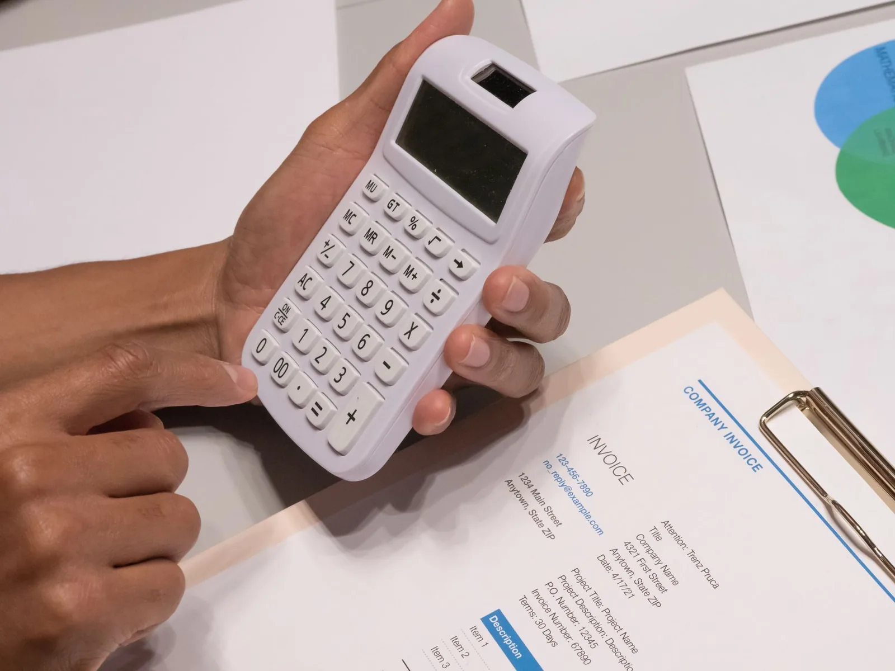

CNPJ Alfanumérico: O que Muda no Sistema e Como Adaptar
O CNPJ alfanumérico já existe fora do papel. A Receita Federal colocou os sistemas novos em produção em 27 de julho de 2026 e atribuiu o primeiro número com letras no dia 31: o 00.000.000/E08G-12, de uma filial do Banco do Brasil. Desde então, as novas inscrições podem receber letras nas 12 primeiras posições. Para quem programa, o problema costuma estar do lado de cá. Pode ser um BIGINT esquecido no banco, uma máscara que só aceita dígitos ou uma integração que manda o CNPJ como número no JSON.
Este guia mostra, camada por camada, o que deixa de funcionar com o CNPJ alfanumérico e como adaptar: banco de dados, validação, front-end, integrações, NF-e, SPED e massa de teste. Os exemplos estão em SQL, Python e JavaScript.
O que é o CNPJ alfanumérico e o que muda no formato
O CNPJ (Cadastro Nacional da Pessoa Jurídica) continua com 14 posições. A mudança veio pela Instrução Normativa RFB nº 2.229/2024, que alterou a IN RFB 2.119/2022 e criou o Anexo XV com a nova regra de formação. O texto previa a implementação a partir de julho de 2026, e o cronograma foi cumprido.
Formato: 12 posições alfanuméricas e 2 dígitos numéricos
As oito primeiras posições formam a raiz, que identifica a empresa. As quatro seguintes indicam a ordem do estabelecimento, como matriz ou filial. Agora, essas 12 posições aceitam números de 0 a 9 e as 26 letras maiúsculas de A a Z. Já as duas últimas, os dígitos verificadores (DV), continuam numéricas.
A máscara também não muda: XX.XXX.XXX/XXXX-XX. Um CNPJ alfanumérico exemplo, usado pela própria Receita nos materiais oficiais, é 12.ABC.345/01DE-35. Só os dois primeiros caracteres lembram um CNPJ comum; a letra aparece já na terceira posição.
Há um detalhe sobre as letras. Chegou a circular a ideia de vetar algumas delas (I, O, U, Q e F), citada na Nota Técnica Conjunta 2025.001 do Portal da NF-e, e a Receita não confirmou o veto. Nas perguntas e respostas oficiais da Receita, a orientação é que os sistemas aceitem de A a Z; filtrar combinações indesejadas é papel dela, na hora de gerar o número. Para o seu validador, a regra é simples: aceite qualquer letra maiúscula.
Quem recebe o novo CNPJ alfanumérico e quem continua igual
Nenhum CNPJ existente muda. A empresa aberta em 2010 segue com o mesmo número e o mesmo DV, sem recadastramento. O novo CNPJ alfanumérico vale só para novas inscrições, inclusive filiais novas de empresas antigas.
Isso cria três situações que o sistema precisa suportar ao mesmo tempo:
- Raiz e ordem numéricas: o CNPJ de sempre.
- Raiz numérica e ordem alfanumérica: filial nova de uma empresa antiga, como
12.345.678/000A-08. O primeiro CNPJ alfanumérico, da filial do Banco do Brasil, é desse tipo. - Raiz alfanumérica: possível só em inscrições feitas a partir de julho de 2026, e mesmo assim não em todas.
Além disso, o formato não depende só da data. Uma empresa aberta em outubro de 2026 pode receber um CNPJ só com números. Por isso, nenhuma regra do tipo "data de abertura depois de julho, então tem letra" faz sentido.
O dígito verificador em um parágrafo
O cálculo continua pelo módulo 11, com os mesmos pesos. Muda só o valor de cada caractere, que passa a ser o código ASCII menos 48. O '0' tem código 48 e vale 0; o '9' (57) vale 9. Ou seja, os dígitos continuam valendo o que sempre valeram, e as letras viram números a partir de 17 (A = 17, B = 18, C = 19). Por isso um CNPJ antigo dá o mesmo DV de antes, e uma única rotina valida os dois formatos. O passo a passo completo, com código, está no post sobre como validar um CNPJ.
Banco de dados: como migrar a coluna para o CNPJ alfanumérico
O banco costuma ser o primeiro ponto de falha. Durante anos, guardar CNPJ como inteiro pareceu economia de espaço, e hoje essa escolha impede o INSERT do primeiro cliente com letra.
Tipo de coluna: CHAR de 14 posições em vez de BIGINT
Qualquer tipo numérico (INT, BIGINT, NUMERIC, DECIMAL) rejeita o CNPJ alfanumérico. Esses tipos também já apagavam os zeros à esquerda. Um CNPJ que começava com 00 virava um número de 12 dígitos, e cada tela precisava completar com zeros para exibir.
A opção mais direta é CHAR(14), guardando só os caracteres, sem pontos, barra nem hífen. O tamanho é fixo, então VARCHAR(14) não traz vantagem. Use um conjunto de caracteres ASCII quando o banco permitir: em UTF-8 (utf8mb4 no MySQL), um CHAR(14) pode reservar até 56 bytes no índice, e o CNPJ não tem acento que justifique isso.
Índices, chaves estrangeiras e ordenação
Trocar o tipo da coluna principal não basta. O CNPJ costuma aparecer como chave estrangeira em pedidos, notas, contratos e logs. Cada uma dessas colunas precisa mudar junto. Senão o JOIN compara texto com número: o PostgreSQL recusa a consulta, e o MySQL converte em silêncio, deixa de usar o índice e pode juntar linhas erradas.
A ordenação também muda. Quem decide é a collation, a regra que o banco usa para comparar e ordenar texto. Na collation binária, que compara byte a byte, os dígitos vêm antes das letras, seguindo a tabela ASCII. Em collation que ignora maiúsculas, 12abc... e 12ABC... passam a ser iguais na busca, o que esconde dado mal normalizado. Por isso, prefira collation binária e uma restrição CHECK que recuse minúsculas.
O índice cresce um pouco, porque 14 bytes ocupam mais que os 8 de um BIGINT. Mesmo em tabelas de milhões de linhas, a diferença é pequena perto do custo de um cadastro que não grava.
Script de migração sem parar o sistema
A troca segura segue o padrão expandir e contrair (expand/contract): primeiro se amplia o esquema, depois se enxuga. O exemplo abaixo é para PostgreSQL:
-- 1. Coluna nova, convivendo com a antiga
ALTER TABLE empresas ADD COLUMN cnpj_txt CHAR(14);
-- 2. A partir daqui, a aplicação (ou um trigger) grava nas duas colunas
-- 3. Copia o histórico em lotes, devolvendo os zeros à esquerda
UPDATE empresas SET cnpj_txt = LPAD(cnpj::text, 14, '0')
WHERE id IN (SELECT id FROM empresas WHERE cnpj_txt IS NULL LIMIT 10000);
-- repita até não sobrar linha
-- 4. Regra de formato sem travar a tabela: cria e depois valida
ALTER TABLE empresas ADD CONSTRAINT ck_cnpj_formato
CHECK (cnpj_txt ~ '^[A-Z0-9]{12}[0-9]{2}$') NOT VALID;
ALTER TABLE empresas VALIDATE CONSTRAINT ck_cnpj_formato;
-- 5. Índice único (CONCURRENTLY não roda dentro de transação)
CREATE UNIQUE INDEX CONCURRENTLY ux_empresas_cnpj_txt ON empresas (cnpj_txt);
Depois do script, o restante acontece em versões da aplicação:
- as leituras e as chaves estrangeiras passam para
cnpj_txt; - a coluna antiga passa a aceitar
NULL, porque um CNPJ com letra não cabe nela, e só então o sistema aceita o primeiro cliente alfanumérico; - numa versão seguinte, a coluna antiga sai.
No MySQL, a coluna nova fica como CHAR(14) CHARACTER SET ascii COLLATE ascii_bin.
Atenção: nunca converta o tipo sem o
LPAD. UmALTER COLUMN ... TYPE textdireto noBIGINTguarda o número sem os zeros, e o CNPJ00.394.460/0058-87vira394460005887, que não passa em nenhuma validação.
Se o seu sistema consulta dados cadastrais de clientes ou fornecedores, teste a API de CNPJ que já aceita o formato alfanumérico, do Hub do Desenvolvedor. Ela consulta os dados direto na Receita, sem captcha, devolve JSON ou XML e tem teste grátis de 3 dias, tempo suficiente para rodar a sua base migrada.
Validação, máscara e regex do CNPJ alfanumérico no código
Depois do banco, o problema migra para o código. Validadores, máscaras e regras de negócio foram escritos supondo 14 dígitos, e quase sempre essa suposição fica escondida num \d, num int() ou num campo numérico.
Regex do novo formato
A Nota Técnica Conjunta 2025.001, que atualizou os schemas XML da NF-e e dos demais documentos fiscais eletrônicos, trouxe a expressão oficial. Para o valor sem máscara, ela é esta:
^[A-Z0-9]{12}[0-9]{2}$
Com máscara, a versão equivalente fica assim:
^[A-Z0-9]{2}\.[A-Z0-9]{3}\.[A-Z0-9]{3}/[A-Z0-9]{4}-[0-9]{2}$
Procure no repositório por \d{14}, [0-9]{14} e \d{2}\.\d{3}. Cada ocorrência é um ponto que recusa o CNPJ alfanumérico. A regex confere só o formato; o DV continua precisando da validação completa.
Normalização: maiúsculas, sem máscara
O usuário vai digitar 12.abc.345/01de-35, colar com espaço ou trazer de uma planilha. A regra mais segura é normalizar na entrada, antes de validar e gravar:
import re
FORMATO = re.compile(r"[A-Z0-9]{12}[0-9]{2}")
def normalizar_cnpj(valor: str) -> str:
limpo = re.sub(r"[.\-/\s]", "", valor).upper()
if limpo.isdigit() and len(limpo) < 14:
limpo = limpo.zfill(14) # legado numerico sem zeros a esquerda
if not FORMATO.fullmatch(limpo):
raise ValueError(f"CNPJ fora do formato: {valor!r}")
return limpo
print(normalizar_cnpj("12.abc.345/01de-35")) # 12ABC34501DE35
O zfill só serve para dados antigos, que perderam os zeros num campo numérico. Um valor com letra nunca recebe preenchimento. Depois de normalizar, chame a função de DV. Com isso, a mesma rotina serve para formulário, importação e API.
Na prática: normalize em um único ponto do código e trate o CNPJ como texto opaco depois disso. Nunca faça conta com ele, nem
int(cnpj)"só para comparar".
Máscara de input no front-end
Campos com type="number" ou inputmode="numeric" abrem o teclado numérico no celular. Com isso, o usuário não consegue digitar letras. Troque por type="text", com autocapitalize="characters", e aplique a máscara por posição:
function mascararCnpj(valor) {
const v = valor.toUpperCase().replace(/[^A-Z0-9]/g, "").slice(0, 14);
let saida = v.slice(0, 2);
if (v.length > 2) saida += "." + v.slice(2, 5);
if (v.length > 5) saida += "." + v.slice(5, 8);
if (v.length > 8) saida += "/" + v.slice(8, 12);
if (v.length > 12) saida += "-" + v.slice(12, 14);
return saida;
}
mascararCnpj("12abc34501de35"); // "12.ABC.345/01DE-35"
Bibliotecas de máscara com padrão 00.000.000/0000-00 também bloqueiam letras. Em geral, o token 0 aceita só dígito. Troque pelo token alfanumérico da biblioteca nas 12 primeiras posições. No jQuery Mask Plugin, por exemplo, o padrão vira AA.AAA.AAA/AAAA-00: o A aceita letra ou número, e o 0 continua só dígito nos dois DVs.
Regras de negócio escondidas no número
Alguns sistemas tiram conclusões do CNPJ. Dois casos merecem revisão. O primeiro é a regra "ordem 0001 é matriz", que fica ainda mais frágil agora que a ordem também pode ter letras. De acordo com a Receita, o 0001 indica a matriz só na geração, e uma filial pode virar estabelecimento principal depois. Para saber quem é matriz, use o dado cadastral, não o sufixo.
O segundo é agrupar filiais pela raiz com conta aritmética, como cnpj // 1000000. Com letras, a raiz é simplesmente cnpj[:8], desde que o valor já esteja normalizado, sem pontos e barra. Funciona nos dois formatos e não depende de tipo numérico.

Integrações, NF-e e SPED com o CNPJ alfanumérico
Um sistema adaptado por dentro ainda pode falhar na borda. Toda troca de dados com parceiros, Secretarias da Fazenda (SEFAZ) e contabilidade precisa ser revista.
APIs de terceiros e contratos de integração
O erro mais comum é o CNPJ trafegando como número no JSON, por exemplo "cnpj": 11222333000181. Um CNPJ com letra não cabe num número JSON: o serializador falha, ou o parceiro que espera inteiro recusa a mensagem. Revise os contratos com gateways de pagamento, bancos, marketplaces, ERP (sistema de gestão empresarial) e transportadoras. O campo deve ser string.
Escreva testes de contrato que mandem um CNPJ alfanumérico real de homologação. Se o parceiro recusar, você descobre no ambiente de teste e não no primeiro pedido de um cliente novo. Para consultas cadastrais, o guia de API de consulta de CNPJ mostra como integrar e guardar a resposta.
O mesmo vale para o Pix. Segundo as perguntas e respostas da Receita, o CNPJ alfanumérico pode ser chave; se o seu sistema cadastra ou valida chave Pix do tipo CNPJ, a regra de formato precisa ser a mesma do cadastro.
NF-e: campos de CNPJ, chave de acesso e DANFE
Na NF-e (Nota Fiscal Eletrônica), o CNPJ aparece em vários campos: emitente, destinatário, transportador e autorizados a baixar o XML. A Nota Técnica Conjunta 2025.001 mudou a regex desses campos para [A-Z0-9]{12}[0-9]{2}. A mudança vale para os documentos coordenados pelo ENCAT (Encontro Nacional de Coordenadores e Administradores Tributários Estaduais), como NF-e, NFC-e (Nota Fiscal de Consumidor Eletrônica), CT-e (Conhecimento de Transporte Eletrônico) e MDF-e (Manifesto Eletrônico de Documentos Fiscais).
A chave de acesso de 44 posições carrega o CNPJ do emitente nas posições 7 a 20, e as 12 primeiras delas (7 a 18) passaram a aceitar letras; e o DV da chave agora usa a mesma regra do ASCII menos 48. O post sobre chave de acesso da NF-e traz o cálculo atualizado. Quem guarda a chave em coluna numérica precisa migrar para CHAR(44).

O DANFE (Documento Auxiliar da NF-e) também precisa de ajuste. O código de barras usava o CODE-128C, uma variante que agrupa os dígitos de dois em dois, mas não aceita letras. A nota técnica sugere alternar para o CODE-128A, que aceita maiúsculas, só no trecho com letra. Na prática, o código de barras fica mais longo e pode não caber no layout antigo; se você gera o DANFE com biblioteca própria, imprima um teste com emitente alfanumérico.
SPED, EFD e obrigações acessórias
Os arquivos do SPED (Sistema Público de Escrituração Digital), como a EFD (Escrituração Fiscal Digital) ICMS IPI e a EFD-Contribuições, levam CNPJ em vários registros. Se o seu gerador formatar o campo como número ou cortar zeros, o arquivo deixa de bater com o cadastro e tende a ser recusado na validação. As obrigações acessórias, que são as declarações e arquivos que a empresa entrega ao Fisco além de pagar o imposto, são justamente onde a Receita aponta o impacto do novo formato.
Confira três pontos no gerador de arquivos. Primeiro, se o campo sai como texto de 14 posições. Segundo, se a validação interna aceita letras. Terceiro, se nenhum relatório ou planilha de conferência gerada para o contador transforma o CNPJ em número no caminho.
Planilhas e CSV que comem zeros e letras
O Excel e o Google Planilhas tratam 00394460005887 como número e removem os zeros. Com o CNPJ alfanumérico, há outro risco: o 1234567E000184 é lido como notação científica (1234567 × 10^184) e a célula exibe 1,23E+190. O CNPJ original se perde sem aviso.
Na exportação, prefira XLSX com a coluna marcada como texto, ou JSON; em CSV, avise quem vai abrir que a coluna deve ser importada como texto. Na importação, nunca confie no tipo inferido. Passe tudo pela função de normalização e recuse o que não fechar o formato.
Para resumir o que muda em cada camada:
| Camada | Antes (só números) | Depois (CNPJ alfanumérico) |
|---|---|---|
| Banco de dados | BIGINT ou NUMERIC, zeros perdidos |
CHAR(14) ASCII, collation binária, CHECK |
| Validação | \d{14} e DV com int(c) |
[A-Z0-9]{12}[0-9]{2} e DV com ASCII menos 48 |
| Front-end | type="number", teclado numérico |
type="text", maiúsculas automáticas |
| Integrações e APIs | CNPJ como número no JSON | CNPJ sempre como string |
| NF-e | Chave de acesso só numérica, CODE-128C | Letras nas posições 7 a 18, código de barras híbrido |
| Planilhas e CSV | Zeros à esquerda somem | Zeros somem e letras viram notação científica |
A API de CNPJ do Hub do Desenvolvedor faz parte de um plano que inclui também consultas de CPF, CEP e frete, entre mais de 20 APIs, sem limite de IPs. Se a sua integração ainda depende de raspar o portal da Receita, vale testar a consulta de CNPJ por API antes de reescrever o conector para o formato novo.
Massa de teste: gerador de CNPJ alfanumérico e checklist de migração
Para fechar a migração, faltam dados de teste. Os CNPJs alfanuméricos de verdade ainda são poucos, e usar dados de empresas reais em homologação traz risco de privacidade. A solução é gerar números fictícios válidos.
O Simulador Nacional de CNPJ da Receita
A Receita publicou o Simulador Nacional de CNPJ, um gerador de CNPJ alfanumérico gratuito. Ele cria até 1.000 CNPJs fictícios por usuário, de matriz e de filial, nos formatos numérico e alfanumérico. Também valida um número informado e guarda o histórico.
Segundo a Receita, o simulador roda no navegador e funciona até sem conexão depois de carregado. Os números servem só para teste, o que ajuda a cumprir a LGPD (Lei Geral de Proteção de Dados). A Receita também publicou um manual e arquivos de referência para o cálculo do DV na página de documentos técnicos do CNPJ.
Um gerador de CNPJ alfanumérico no próprio teste
Para testes automatizados, gerar no código é mais prático. O exemplo abaixo reaproveita a função de DV que você já tem no projeto, como a do post sobre validação, e sorteia as 12 primeiras posições:
import random
import string
from validacao import calcular_dv # recebe 12 caracteres, devolve os 2 DVs como str (ex.: "35")
ALFABETO = string.digits + string.ascii_uppercase
def gerar_cnpj_alfanumerico(rng=random):
while True:
base = "".join(rng.choice(ALFABETO) for _ in range(12))
if base != "0" * 12: # recusa a base toda zero
return base + calcular_dv(base)
def gerar_massa(qtd=1000, semente=42):
rng = random.Random(semente) # semente fixa: massa reproduzivel
return [gerar_cnpj_alfanumerico(rng) for _ in range(qtd)]
Com a semente fixa, a massa é sempre a mesma: se um teste falhar, ele falha de novo com o mesmo CNPJ, o que facilita a depuração. Inclua também casos de borda escritos à mão: as 12 primeiras posições só com letras, tudo número, letras apenas na ordem e CNPJ antigo com zeros à esquerda.
Na prática: confira o DV de qualquer exemplo copiado de documentação antes de usá-lo como caso de teste. O
12.ABC.345/01DE-35da Receita confere. Já o exemploAA.345.678/0003-29, das perguntas e respostas da Receita, não fecha: pelo algoritmo oficial, os DVs corretos seriam 86, e não 29. Usado como caso válido, ele faria o teste acusar erro num validador que está certo.
Checklist de migração por componente
| Componente | O que verificar | Teste mínimo |
|---|---|---|
| Esquema do banco | Colunas, chaves estrangeiras e índices com CNPJ ou chave de acesso | Inserir 12ABC34501DE35 em todas as tabelas |
| Validação | Regex, DV com ASCII menos 48, normalização para maiúsculas | Aceitar 12.abc.345/01de-35 e recusar DV errado |
| Front-end | type do campo, teclado no celular, biblioteca de máscara |
Digitar uma letra num celular Android e num iPhone |
| Regras de negócio | Matriz pelo 0001, raiz por divisão, conversões para número | Filial alfanumérica de raiz numérica |
| Integrações | Tipo do campo nos contratos, parsers e webhooks | Teste de contrato com CNPJ alfanumérico |
| Documentos fiscais | XML, chave de acesso, DANFE e arquivos do SPED | Emitir em homologação com emitente alfanumérico |
| Planilhas e relatórios | Importação, exportação e formatação de colunas | Ida e volta por CSV sem perder caracteres |
Perguntas frequentes sobre o CNPJ alfanumérico
Quando começou o CNPJ alfanumérico?
A Instrução Normativa RFB 2.229/2024 previu a implementação a partir de julho de 2026. Pelo cronograma da Receita, os sistemas entraram em produção em 27 de julho de 2026 e o primeiro CNPJ alfanumérico foi atribuído em 31 de julho de 2026.
Meu CNPJ atual vai mudar?
Não. Os CNPJs existentes continuam com o mesmo número e o mesmo dígito verificador, sem recadastramento. O formato alfanumérico vale só para novas inscrições, inclusive filiais novas de empresas que já existem.
Quais caracteres o CNPJ alfanumérico aceita?
As 12 primeiras posições aceitam números de 0 a 9 e letras maiúsculas de A a Z. As duas últimas, que são os dígitos verificadores, continuam numéricas. A Receita orienta que os sistemas aceitem todas as letras.
Existe um gerador de CNPJ alfanumérico oficial?
Sim. A Receita disponibiliza o Simulador Nacional de CNPJ, que gera até 1.000 CNPJs fictícios por usuário, de matriz e de filial, e valida números informados. Os números servem só para testes.
Qual é um CNPJ alfanumérico exemplo válido para testes?
O exemplo usado pela Receita é 12.ABC.345/01DE-35, que sem máscara fica 12ABC34501DE35. Ele é fictício e tem os dígitos verificadores corretos pelo cálculo oficial.
Posso guardar o CNPJ alfanumérico em coluna numérica?
Não. Tipos como INT, BIGINT e NUMERIC não aceitam letras e, mesmo antes, já apagavam os zeros à esquerda. Use uma coluna CHAR de 14 posições, sem máscara, com uma restrição que aceite letras maiúsculas e números nas 12 primeiras posições e só números nas duas últimas.
Resumo para colocar em produção
Para adaptar o sistema ao CNPJ alfanumérico 2026, migre colunas para CHAR(14), normalize a entrada para maiúsculas sem máscara e troque \d{14} pela nova regex. Depois, valide o DV com ASCII menos 48, revise contratos de integração e gere massa de teste fictícia. Nenhum desses passos é grande, mas basta esquecer um para o erro aparecer no cadastro do primeiro cliente novo.
Os dois formatos vão conviver por muitos anos, então a meta é tratar o CNPJ como texto em todo o sistema, do formulário ao arquivo do SPED.
Para validar a base migrada contra dados reais da Receita, crie sua conta e use a API de consulta de CNPJ do Hub do Desenvolvedor, que já aceita o formato alfanumérico. Ela traz os dados cadastrais completos da empresa, direto da Receita. Confira no painel os campos da resposta e aproveite o teste grátis de 3 dias.